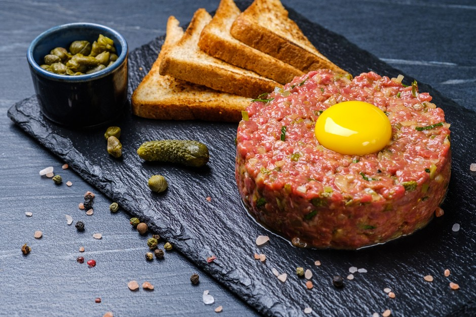

How to make Beef Tatar

What is Beef Tatar?
Beef Tatar is made from raw beef. It comes from the French cuisine. The French were inspired by the Tatarian people, hence the name. You ususally eat it with an egg and brioche bread. The ingredients are for 1 person.
Ingredients
- 200 grams of Filet Mignon
- 100 grams of Brioche bread
- 1 egg
- 1 teaspoon of mustard
- 50 grams of pickled onions
- Salt and Pepper
Steps
- Cut the beef in slices and then mice it with a mincing knife or a meat grinder until you have a fine texture.
- Add the mustard, minced pickled onions, salt and pepper to the meat and mix it.
- Cook the egg in a pan on medium heat for 3-4 Minutes until the eggwhite is solid, but the yolk ist still liquid.
- Toast the brioche slices and cut them in triangles.
- Put the meat on a plate in a round form, the top has to be flat, then put the egg on top and the bread on the side et voila. Enjoy!